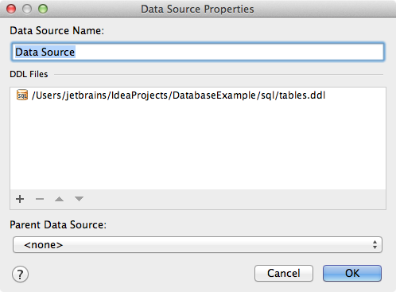

Create DDL data source in Database tool window to get code assistance for SQL queries (even in Java classes), database diagrams, compare tools and other useful features for work with database schemas.
